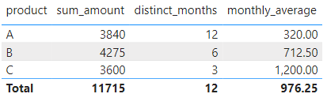
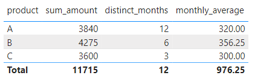

Background Example
month = STARTOFMONTH(orders_small[date])
Background Example

Background Example

Background Example

Background Example

Background Example
sum_amount = SUM(orders_small[dollar_amount])distinct_months = DISTINCTCOUNT(orders_small[month])monthly_average = DIVIDE([sum_amount], [distinct_months])
Basic Strategies
- Show missing items

- Doesn’t work in this example
Basic Strategies
sum_amount_zero = SUM(orders_small[dollar_amount]) + 0
- Doesn’t fix table
Basic Strategies
monthly_average = DIVIDE([sum_amount], 12)

- Doesn’t fix graph
Setup with Bigger Dataset

Calendar Table
cal_month = STARTOFMONTH(cal_table[DATE])
Calendar Table

Star Schema
- Main orders table in the middle
- Important dimensions on the outside
Star Schema
product = SUMMARIZECOLUMNS(orders_big[product])customer = SUMMARIZECOLUMNS(orders_big[customer_id])
ADDMISSINGITEMS()
- Adds rows with empty values to a table returned by SUMMARIZECOLUMNS. (MS Docs)
- Add the rows with empty measure values back. (dax.guide)
ADDMISSINGITEMS()
orders_zeros_added = ADDMISSINGITEMS(cal_table[cal_month], 'product'[product], SUMMARIZECOLUMNS(cal_table[cal_month], 'product'[product], "amount", SUM(orders_big[dollar_amount])), cal_table[cal_month], 'product'[product])
ADDMISSINGITEMS()
orders_zeros_added = CALCULATETABLE(ADDCOLUMNS( ADDMISSINGITEMS(cal_table[cal_month], 'product'[product], SUMMARIZECOLUMNS(cal_table[cal_month], 'product'[product], "amount", SUM(orders_big[dollar_amount])), cal_table[cal_month], 'product'[product]), "amount filled", IF(ISBLANK([amount]), 0, [amount])))
ADDMISSINGITEMS()

High Density Sampling

- Might need to turn this off
ADDMISSINGITEMS()

Filter Product Availability

Filter Product Availability

Filter Product Availability
product_availability = FILTER(CROSSJOIN(cal_table, product), cal_month[month] >= product[start_month] && cal_month[month] <= product[end_month])
Filter Product Availability

Filter Product Availability
orders_zeros_added = CALCULATETABLE(ADDCOLUMNS( ADDMISSINGITEMS(cal_table[cal_month], 'product'[product], SUMMARIZECOLUMNS(cal_table[cal_month], 'product'[product], "amount", SUM(orders_big[dollar_amount])), cal_table[cal_month], 'product'[product], product_availability), "amount filled", IF(ISBLANK([amount]), 0, [amount])))
Filter Product Availability

Filter Product Availability

Filter Product Availability

Customers
orders_zeros_added = CALCULATETABLE(ADDCOLUMNS( ADDMISSINGITEMS(cal_table[cal_month], 'product'[product], SUMMARIZECOLUMNS(cal_table[cal_month], 'product'[product], "amount", SUM(orders_big[dollar_amount]), "customers", DISTINCTCOUNT(orders_big[customer_id])), cal_table[cal_month], 'product'[product], product_availability), "amount filled", IF(ISBLANK([amount]), 0, [amount]), "customers filled", IF(ISBLANK([customers]), 0, [customers])))
Customers

Customers

Orders
orders_zeros_added = CALCULATETABLE(ADDCOLUMNS( ADDMISSINGITEMS(cal_table[cal_month], 'product'[product], SUMMARIZECOLUMNS(cal_table[cal_month], 'product'[product], "amount", SUM(orders_big[dollar_amount]), "customers", DISTINCTCOUNT(orders_big[customer_id]), "orders", DISTINCTCOUNT(orders_big[order_number])), cal_table[cal_month], 'product'[product], product_availability), "amount filled", IF(ISBLANK([amount]), 0, [amount]), "customers filled", IF(ISBLANK([customers]), 0, [customers]), "orders filled", IF(ISBLANK([orders]), 0, [orders])))
Orders

Orders